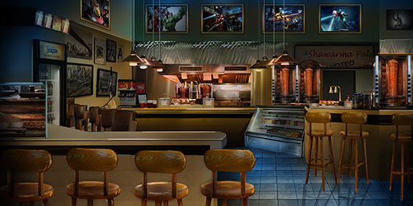
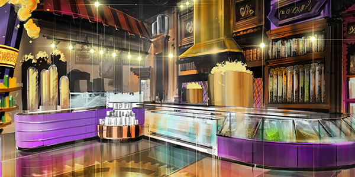
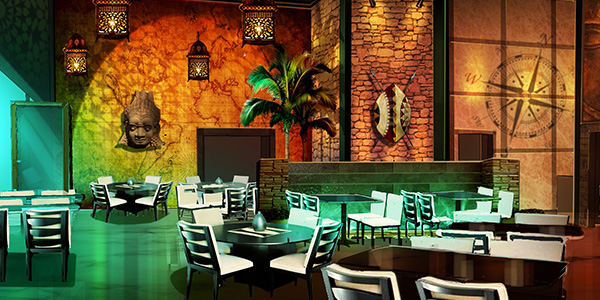
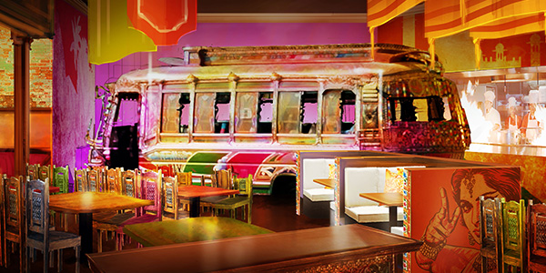
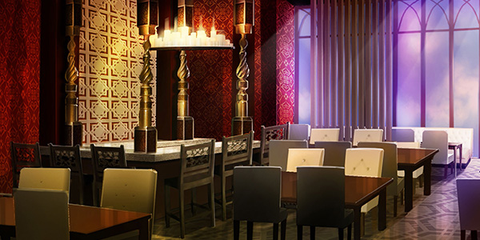

Want to eat and drink with your favorite Cartoon Network or MARVEL characters, or to share a meal with your family while watching dinosaurs in their natural habitat? Now’s your chance…Our chefs use only the freshest ingredients to prepare the finest meals in incredible interactive settings.
Marvel |
|
Tony’s SkydeckEnjoy the best steak and seafood at IMG Worlds of Adventure’s premier restaurant: Tony’s Skydeck. Tony Stark’s own restaurant on the upper floors of the Avengers Tower is the place to sit back and soak in the spectacular views over the city while enjoying a fine dining experience that is as hip as it is refined. Tony Stark is a man of exquisite taste – why not join him at the Chef’s Table (seats six) for the true VIP experience. (*Opens only for corporate events) |
Chang’s Golden DragonAn old-style city favorite located in the Marvel Zone. Order a specialty Pan-Asian dish or two in this sharing style casual dining restaurant and feel the heat generated by spectacular flaming woks in the open kitchen! Bring your friends and family for an experience you’ll not soon forget. |
|  | |
Mama Scano’s Of Yancy StreetWhere better for an unforgettably fun meal than the bustling Mama Scano’s, where the hardworking staff uphold the best of Italian culinary traditions, laughing and joking with guests (and each other) throughout the day and night. The best wood-fired pizza and pasta in town, Mama Scano's has perfected the art of raucous hospitality over generations. |
Downtown ShawarmaGrab a quick bite at The Avengers’ favorite hangout… sit and eat or grab and go while enjoying the urban vibe. Nothing helps a Super Hero fight battles better than a well-crafted shawarma. Our team has a range of different takes on the shawarma sure to satisfy any budding Super Hero’s craving. | Lost Valley |
 | |
Spice ValleyDeep in the Lost Valley, Spice Valley serves delicious Indian inspired cuisine to satisfy even the most famished of dinosaur handlers… Take a seat and soak up the atmosphere… the shimmering gas-fired tandoor ovens and the flame roasted rotisserie meats; this is Indian hospitality at its best. Just make sure you’re hungry before you join us at this buffet style restaurant. |
Carnivore Hut brought to you by Wingstop (America’s Number 1 Chicken Wing concept)The Carnivore Hut has been serving up the very best chicken wings from a small window since it was opened decades ago by a ship’s cook grown tired of the island’s fruit. Taste the chicken wings that have been perfected over generations and discover for yourself why being marooned in the Lost Valley isn’t quite as bad as people say. |
360 Express360 Express serves gourmet burgers and hotdogs that guaranteed to please kids and adults alike. | Cartoon Network |
CN FeastJoin your favorite Cartoon Network characters in this family-friendly restaurant where the excitement doesn’t stop for the ultimate interactive dining experience. Situated over two floors, relax and have fun meeting and posing for photos with Cartoon Network stars while you enjoy delicious international-style cuisine in a casual dining environment. |
Mr. SmoothyHang out with Ben 10 and his buddies in this American-style diner where the smoothies have to be tasted to be believed! Burgers don’t get better than this – you’ll want to keep coming back for more. |
Richard’s Around the World CaféYou don’t have to go far to travel, or so the saying goes… why not take your taste buds on a trip of a lifetime at Richard’s Around the World Café, where the gourmet menu is international in flavor with a twist and the vibe is modern and friendly. Bring your passport for a culinary voyage of the senses! (*Opens only for birthdays and school trips) |
Finn & Jake’s - Everything BurritoAdventuring heroes need sustenance – where better to find it than at Finn & Jake’s - Everything Burrito? Made with the freshest ingredients, these are burritos, and more, to write home about… No wonder everyone travels across the Land of Ooo for a fabulous Finn & Jake burrito! (*Opens only for birthdays and school trips) | IMG Boulevard |
|  |  |
Popcorn FactoryThe Popcorn Factory brings to life the wonderful world of gourmet popcorn and other candy concoctions in a visual blast of color - a treat to watch and a delight for the tastebuds. With unique flavors of popcorn, candy treats and a fantastic show kitchen, the Popcorn Factory is an IMG Worlds of Adventure must see! |
Boulevard GourmetVisit this center of culinary excellence situated over two floors and taste the very best food from each of the four continents. There is something here for everyone, even the most world-weary traveller. Sit back and let us amaze you. The view of the terrace is breathtaking. |
|  |  |
Samosa HouseTaste the exotic flavors of samosas from all over the region at Samosa House… This casual dining Indian street food restaurant brings to life the ancient art of samosa and chai – a delight for the senses and fun for all the family. |
Flavors of ArabiaA smart-casual eating experience to rank alongside the best of Dubai restaurants, Flavors of Arabia serves the greatest contemporary Arabic-world cuisine in an environment that is elegant but informal. This is destination dining at its best – sensory indulgence to satisfy the most demanding tastebuds. |
 | |
The CoffeehouseDid someone say fine coffee, freshly baked breads, pastries, salads, soups, and sandwiches? Get to The Coffeehouse for the best coffee and freshly baked products in town…. let the aromas of freshly brewed coffee and fresh bread transport you. |